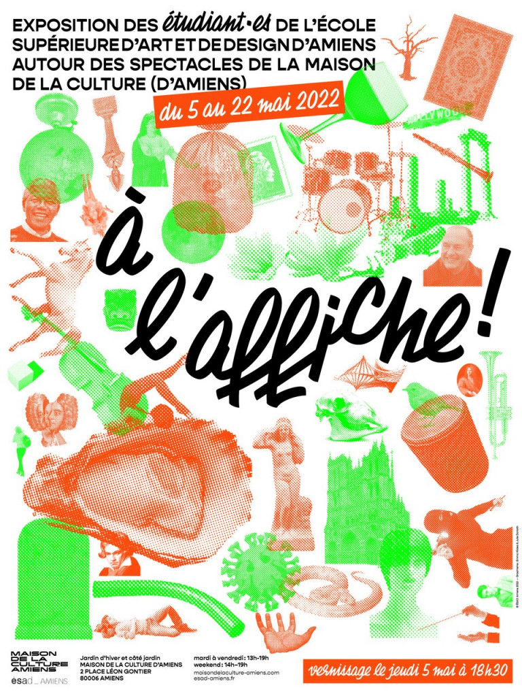

EXPOSITIONS/CONFÉRENCES
18 octobre 2022, Conférence, Kit graphique, Valérie Yobé, ESAD Amiens
12 octobre 2022, Conférence, Regarder les livres-avec le numérique, Lucile Haute, ESAD Amiens
octobre 2022, Exposition, Éditions Non Standard: Making Books Together, ESAD Amiens
mai 2022, Exposition, À l'affiche !, étudiants 3e années de l'ESAD, Maison de la culture d'Amiens

avril 2022, Exposition, The Bookshelf at the End of the Cantosverse, Paulo de Cantos, Studio Barbara says..., ESAD Amiens
10 mars 2022, Conférences, Dispar(ÊTRE), Vanina Pinter, ESAD Amiens
Mars 2022, Exposition, SANS (FR) 1628-1924, éditions Non standard/ Sébastien Morlighem, ESAD Amiens
10 février 2022,Conférences, Élise Gay et Kévin Donnot, ESAD Amiens
Janvier 2022, Exposition Abdulmonam Eassa, Photographies, ESAD Amiens
14 octobre 2021, Business class.es, Erasmus Days, ESAD Amiens
12 octobre 2021, Koré Sèbèli, Lucille Guigon, ESAD Amiens
ÉVÈNEMENTS
10 au 13 novembre 2022, Festival OffPrint, Pavillon de l'Arsenal, Paris
10 au 13 novembre 2022, Accident"s", Atypical Book Fair, 2e édition, Cité des arts, Paris
Semaine thématique 2022, Beaucoup d'années à tourner des poulets, workshop ESAD Amiens